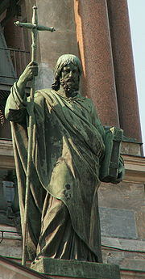

| Апостол Филипп Материал из Википедии — свободной энциклопедии |
|  | Фили́пп — один из двенадцати апостолов (учеников) Иисуса Христа, персонаж Нового Завета.
Упомянут в списках апостолов в Евангелии от Матфея (10:3), от Марка (3:18), от Луки (6:14), а также в Деяниях Апостолов (1:13). Евангелие от Иоанна сообщает, что Филипп был родом из Вифсаиды, из одного города с Андреем и Петром и призван за ними третьим. Филипп привёл к Иисусу Нафанаила (Варфоломея) (1, 43-46). На страницах Евангелия от Иоанна Филипп появляется ещё трижды: он беседует с Иисусом о хлебе для множества народа (6, 5-7); приводит к Иисусу Еллинов (эллинизированных иудеев) (12, 20-22); просит Иисуса на Тайной вечере показать Отца (14, 8-9). Евсевий Кесарийский приводит сообщение Климента Александрийского о том, что Филипп был женат и имел дочерей, с которыми был знаком и Папий. Филипп проповедовал Евангелие в Скифии и Фригии. За проповедническую деятельность был казнён (распят головой вниз) в 87 году (во время правления римского императора Домициана) в городе Иераполе Фригийском, в Малой Азии. Святой апостол Филипп. (Церковь Успения Божьей Матери в Кондопоге) Память апостола Филиппа Католическая церковь отмечает 3 мая, Русская православная церковь — 27 ноября. В этот день начинается Рождественский пост в Русской православной церкви, поэтому Рождественский пост называют также Филипповым. Упомянутый в Деяниях Апостолов Филипп Диакон или Филипп Евангелист — другое лицо, тёзка апостола Филиппа. Существует гностический апокриф — Евангелие от Филиппа, который, однако, без сомнения не имеет с апостолом Филиппом ничего общего и создан в III—IV веках; а также апокрифический текст Деяния Филиппа. После Вознесения Господа апостол Филипп, по преданию, проповедовал Слово Божие в Галилее, сопровождая проповедь чудесами. Так, он воскресил младенца, которого несла на руках безутешная мать. Проповедуя Евангелие в Греции, он воскресил одного умершего. Проповедуя Христа в Иераполе Сирийском, апостол Филипп вызвал сильный гнев в народе, угрожавшем даже побить его камнями, и по требованию толпы воскресил мёртвого, которого несли на носилках в продвигавшемся мимо погребальном шествии[1][2]. |
Житие святого Апостола ФилиппаПри озере Галилейском, близ Хоразина и Капернаума, находился город, называемый Вифсаида1. В этом городе родились три апостола Христова из лика 12-ти: Петр, Андрей и Филипп. Петр и Андрей были рыбарями и этим промыслом занимались до самого призвания их Христом; Филипп же с юношеских лет отдан был родителями книжному обучению. Усердно читая и изучая Священное Писание и пророчества о вожделенном Мессии, он воспылал горячею любовью к Нему и сильным желанием видеть Господа лицом к лицу, хотя еще и не знал, что уже пришел на землю Тот, видеть Которого столь многие желали, ожидая пришествия Его.Но вот Христос пришел в пределы Галилейские и нашел там Филиппа, пылавшего такой любовью к Мессии. "Иди за мною", - сказал Иисус Филиппу (Ин. 1:43). Филипп, услышав призыв Господа, всем сердцем уверовал, что Он есть истинный Мессия, обетованный Богом через пророков, и последовал за Ним. Внимая пресвятой жизни Господа, Филипп старался подражать Ему и поучался от Него Божественной премудрости, силою которой впоследствии победил он безумие языческое. Радуясь обретению такого Сокровища, Которым весь мир имел быть искуплен, Филипп не хотел один только обогащаться от Него, но желал, чтобы и другие были участниками того же дара. Встретив своего друга Нафанаила, он с радостью возвестил ему: "Мы нашли Того, о Котором писали Моисей в законе и пророки - Иисуса, сына Иосифа, из Назарета". Нафанаил, услыхав это и не веря, чтобы из небольшого города и из простого рода мог произойти Мессия, Царь Израильский, сказал: "Из Назарета может ли что быть доброе?" Тогда Филипп, не говоря ничего, посоветовал ему только взглянуть на Него. "Пойди, - сказал он, - и посмотри". Он чувствовал, что как только Нафанаил увидит Иисуса и услышит спасительные слова Его, тотчас же поверит, что Он есть Мессия. Так это действительно и произошло. Когда Филипп шел с ним к Иисусу, то Господь, испытующий сердца и утробы и читающий сокровенные мысли и сердца людей, увидев Нафанаила, идущего к Нему, узнал его и сказал о нем: "Вот подлинно израильтянин, в котором нет лукавства". Услыхав эти слова, Нафанаил был сильно удивлен и сказал Ему: "Почему Ты знаешь меня?" Господь ответил ему: "Прежде, нежели позвал тебя Филипп, когда ты был под смоковницей, Я видел тебя". Нафанаил же, когда был под смоковницей, размышлял о Божественном Мессии, в надежде на которого заключалась вся радость и веселье верных рабов Божиих; и даровал ему Бог в то время сокрушение сердечное и теплые слезы, которые он присоединял к своей усердной молитве, чтобы Господь исполнил обещанное от века отцам и послал на землю Спасителя миру. Всевидящее око Божие видело в то время Нафанаила, который пребывал в духе умиления; потому и сказал ему Господь, что, когда Нафанаил находился под смоковницей, Он видел его. Нафанаил от этих слов пришел в еще большее изумление. Он вспомнил, о чем размышлял, находясь под смоковницей, и с каким умилением молил Бога о ниспослании Мессии; он знал, что там не было с ним ни одного человека, который бы его видел, и что мыслей его никто не мог прозреть, кроме Бога. Потому Нафанаил тотчас же уверовал, что Иисус есть Мессия, Которого Бог обещал послать для спасения рода человеческого, и признал в Иисусе Христе, провидевшем тайны его сердца, Божеское естество, а потому и воскликнул: "Учитель! Ты - Сын Божий, Ты - Царь Израилев" (Ин. 1:45-49)! Сколько благодарных чувств питал впоследствии Нафанаил к Филиппу за то, что тот возвестил ему о пришедшем на землю Спасителе и привлек его к обетованному Мессии! И святой Филипп ликовал в сердце своем, что люди обрели Божественное Сокровище, сокрытое в глубине человеческого естества, и еще большею любовью горел он к своему Господу. Тем не менее, святой Филипп видел в Божественном Учителе своем только высокие совершенства человеческие, но не познавал еще в Нем Божества Его. И вот Христос захотел исправить его. Однажды Господь, идя по другую сторону моря Тивериадского2 с пятью тысячами народа и желая напитать чудесным образом такое множество своих слушателей, сказал Филиппу: "Где нам купить хлебов, чтобы их накормить?" (Ин. 6:5-6). Это сказал Он, испытывая его, ибо знать, что негде достать хлеба; знал Он вперед и то, что ответит ему Филипп. Для того и спросил Он Филиппа об этом, чтобы тот более познал себя самого и, устыдившись своего маловерия, исправился. И действительно, Филипп не вспомнил о всемогуществе Божием и не сказал: "Ты, Господи, все можешь, не подобает Тебе кого-либо о том спрашивать: только пожелай и все тотчас насытятся: "Даешь им - принимают, отверзаешь руку Твою - насыщаются благом" (Пс. 103:28). Не сказал этого Филипп, но, помышляя о Господе своем, как о человеке, а не как о Боге, сказал: "Им на двести динариев3 не довольно будет хлеба, чтобы каждому из них досталось хотя понемногу" (Ин. 6:7). Потом вместе с другими учениками добавил: "Отпусти народ, чтобы они пошли в окрестные селения и купили себе пищи" (Мк. 6:36). Когда же Господь преломил пять хлебов и две рыбы для пяти тысяч народа (Лк. 9:6), Филипп увидел, что от руки Господней, как из неистощимой житницы, все получали довольно пищи, пока весь народ не насытился. Тогда апостол сильно устыдился своего маловерия и, утвердившись в вере, прославил вместе с другими в Иисусе Христе силу Божью. Впоследствии Филипп был причтен Господом к лику двенадцати избранных апостолов, получил благодать от Него и удостоен был близкого с Ним общения. Однажды в праздник собрались в Иерусалим некоторые из еллинов и не могли приблизиться к Иисусу, будучи неверующими язычниками; поэтому, приступив к Филиппу, умоляли его, говоря: "Господин, нам хочется видеть Иисуса!" Он же, прежде всего, сказал о том Андрею и вместе с ним уже осмелился известить Иисуса о желании еллинов, радуясь тому, что и язычники ищут увидать и услыхать Господа его и Учителя. Тогда услышал он от Иисуса дивное учение и пророчество о язычниках, которые имели уверовать в Него не тогда, но после Его смерти. "Если, - сказал Он, - зерно пшеничное, упав на землю, не умрет, то останется одно; если же умрет, то принесет много плода" (Ин. 12:24). Этим Христос как бы так говорил: "Пока Я живу на земле, то имею только часть дома Израильского, верующего в Меня; если же умру, то не один только дом Израилев, но и многие язычники уверуют в Меня". В другой раз, после Тайной Вечери, Филипп дерзнул спросить Господа о великом таинстве Божества, когда молил Его о явлении им Отца, говоря: "Господи, покажи нам Отца, и довольно для нас!" (Ин. 14:8). Этим вопросом он принес большую пользу Церкви Христовой, так как отсюда научились мы познавать единосущие Сына с Отцом и заграждать уста еретиков, отвергающих эту Божественную истину. Господь на это отвечал с кротким упреком: "Столько времени Я с вами, и ты не знаешь Меня, Филипп! Видевший Меня видел Отца; как же ты говоришь: покажи нам Отца? Разве ты не веришь, что Я в Отце, и Отец во Мне? Слова, которые говорю Я вам, говорю не от Себя; Отец, пребывающий во Мне, Он творит дела. Верьте Мне, что Я в Отце и Отец во Мне" (Ин. 14:9-11). Этот ответ Господа научил святого Филиппа и с ним всю Соборную Апостольскую Церковь достойно веровать в равенство Божества Сына с Отцом и обличает богохульство Ария, который говорил, что Сын Божий есть творение, а не Творец. После вольных страданий и воскресения Сына Божьего святой Филипп видел с прочими апостолами Господа своего уже в бессмертном и прославленном теле, принял от Него мир и благословение, видел также и вознесение Его. После этого он сподобился благодати Святого Духа и стал проповедником Христовым среди язычников, ибо ему выпал жребий идти на проповедь в Малую Азию и Сирию. Сначала он проповедовал в Галилее. Здесь однажды встретила его некоторая женщина, несшая на руках своего умершего младенца и неутешно рыдавшая. Увидев ее, апостол Христов сжалился над ней и, простерши руку над умершим младенцем, сказал: "Встань! так повелевает тебе Христос, мной проповедуемый". И тотчас же младенец ожил. Мать, увидев воскрешенного сына своего живым и здоровым, в радости припала к ногам апостола, воздавая ему благодарение за воскрешение сына своего и прося от него крещения, ибо уверовала в проповедуемого им Христа Господа. Апостол, крестив мать и сына, отправился в языческие страны. Проповедуя Евангелие в Греции, он творил многие чудеса силой Христовою, исцелял болезни, воскресил одного мертвеца. Это чудо привело в изумление живших там иудеев, и они послали в Иерусалим к архиереям и князьям иудейским известие, что пришел к ним какой-то неизвестный человек, именем Филипп, проповедуя имя Иисусово, которым изгоняет бесов и исцеляет всякие болезни и даже воскресил одного умершего тем же именем Иисусовым, и уже многие уверовали во Христа. Вскоре прибыл из Иерусалима в Грецию один архиерей с книжниками, озлобленный и раздраженный на Филиппа. Облекшись в свою архиерейскую одежду, он высокомерно и гордо воссел на судейское место в присутствии множества народа, как иудеев, так и язычников. Приведен был сюда и Апостол Филипп и поставлен среди собрания. Окинув его грозным взглядом, архиерей с гневом начал говорить: "Не довольно ли было с тебя Иудеи, Галилеи и Самарии, чтобы прельщать простых и неученых людей? Но ты и сюда пришел к мудрым еллинам, чтобы распространять соблазн, которому научился от Иисуса, противника закона Моисеева, за что Тот был осужден, распят на кресте и умер позорной смертью, и только ради бывшего в то время праздника Пасхи был погребен, а вы, ученики Его, украли Его тайно и для обольщения многих всюду разглашали, что Он Сам воскрес из мертвых". Когда архиерей произнес эти слова, толпа закричала на Филиппа: "Что ответишь ты на это, Филипп?" И произошел большой шум в народе: одни стояли за то, чтобы Филипп был тотчас же убит а другие, чтобы он был отведен на казнь в Иерусалим. Тогда святой апостол отверз уста свои и сказал архиерею: "Напрасно возлюбил ты суету и говоришь ложь! Зачем сердце твое остается окаменелым, и ты не хочешь исповедать истины? Не вы ли приложили печать ко гробу и приставили стражу, и когда Господь наш воскрес, не разрушив гробовой печати, не вы ли тогда дали золота воинам, чтобы они солгали, будто во время их сна Его мертвого украли ученики Его? Как же ты теперь не стыдишься искажать истину? Самые печати гробовые послужат в день суда ясными обличителями вашей лжи, как свидетели истинного воскресения Христова". На эти слова апостола архиерей разгневался еще более и в безумной злобе бросился на него, желая сам схватить и убить апостола, но в ту же минуту ослеп и весь почернел. Присутствующие, видя совершившееся, приписали это волхвованию и, бросившись на Филиппа, хотели погубить его, как волхва, но всех желавших схватить его постигло то же наказание, как и архиерея. При этом земля страшно поколебалась, и все затрепетали от страха и познали великую силу Христову. Апостол Филипп, видя их слепоту душевную и телесную, прослезился над ними и обратился с молитвой к Богу, прося просветить их. И вот, по молитве святого, свыше было послано исцеление всем пострадавшим. Это чудо заставило многих обратиться ко Христу и уверовать в Него. Но архиерей, все еще ослепленный злобой, не только не хотел после постигшего его наказания исправиться и познать истину, но вновь стал произносить многие хулы на Господа нашего Иисуса Христа. Тогда его поразила еще большая казнь. Внезапно земля, раскрыв свои недра, поглотила его, как некогда Дафана и Авирона4. После погибели архиерея святой Филипп многих крестил там и поставил им епископом одного почтенного и достойного мужа по имени Наркисса, сам же ушел в Парфию. Дорогой он просил у Бога помощи в трудах своих. И вот в то время, как он преклонил колена для молитвы, явилось ему с неба изображение орла с золотыми крыльями, распростертыми наподобие распятого Христа. Укрепленный этим явлением, святой Филипп отправился опять на проповедь и, обошедши аравийские и кандакийские города, сел на корабль и поплыл морем к Сирийскому городу Азоту5. Ночью поднялась сильная буря на море, и все уже отчаивались за жизнь свою. Тогда святой апостол встал на молитву, и тотчас же явилось на небе знамение светоносного креста, которое озарило мрак ночи, и море внезапно утихло, и волны его улеглись. Пристав к берегам Азота, Филипп высадился с корабля и был принят в дом одного страннолюбца по имени Никоклида, у которого была дочь Харитина, страдавшая болезнью одного глаза. Войдя в дом Никоклида, апостол начал проповедовать присутствовавшим слою Божие, и все с радостью слушали его. В числе слушающих присутствовала и Харитина; она объята была таким духовным восторгом от учения апостола, что забыла даже о болезни своей. Он же, видя такое усердие ее к слову Божьему, повелел ей призвать имя Иисуса Христа и приложить руку к болевшему глазу. Как только Харитина исполнила это, в ту же минуту исцелился глаз ее, и весь дом Никоклидов уверовал во Христа и принял святое крещение. Из Азота Апостол Филипп направился в Иераполь Сирийский6, где, проповедуя Христа, вызвал сильный гнев в народе, угрожавшем даже побить его камнями. Но заступничество одного влиятельного гражданина по имени Ир спасло его от народного возмущения. "Граждане! - обратился он к народу. - Послушайте совета моего, не делайте никакого зла этому чужестранцу до тех пор, пока не узнаем, истинно ли учение его, и если оно не окажется таковым, то погубим его". Народ не осмелился противоречить Иру, который вслед затем привел Филиппа в дом свой. Апостол предложил у него обычную свою проповедь и обратил к святой вере Ира, весь дом его и соседей, просветив их таинством святого крещения. Граждане, узнав о том, что Ир принял крещение, собрались ночью и обступили дом его, намереваясь сжечь в нем Ира во время сна вместе с апостолом и со всеми его домашними. Открыв их замысел, апостол безбоязненно предстал перед ними; они же, как дикие звери, скрежеща зубами, схватили его и повели в свой совет. Начальник совета, имя которому было Аристарх, увидев апостола, протянул свою руку и схватил его за волосы, но в ту же минуту рука его иссохла и он лишился зрения и слуха. Тогда, в чувствах народа произошла перемена: гнев их, при виде этого чуда, сменился изумлением, и народ стал умолять апостола исцелить градоначальника их Аристарха. Филипп же сказал: "Если он не уверует в проповедуемого мной Бога, то не будет исцелен". В это время вблизи них двигалось погребальное шествие, и народ, желая надругаться над апостолом, сказал: "Если воскресишь этого мертвеца, тогда Аристарх и мы уверуем в Бога твоего". Апостол возвел очи свои на небо, долго молился и потом, обратившись к умершему, сказал кротким голосом: "Феофил!" И тотчас мертвец поднялся на носилках, сел и открыл глаза свои. Тогда вторично сказал ему Филипп: "Христос повелевает тебе: встань и говори с нами!" Умерший, встав с одра своего, припал к ногам апостола со словами: "Благодарю тебя, святой слуга Божий, что избавил меня в этот час от великого зла: два черных и зло-смрадных эфиопа повлекли меня, и если бы ты не предотвратил и не избавил меня от них, то я был бы низвергнут в мрачный тартар". Тогда все видевшие это преславное чудо, единогласно прославили Единого Истинного Бога, проповедуемого Филиппом. Апостол сделал рукой знак народу, чтобы он умолк на некоторое время, и велел Иру положить своей рукой крестное знамение на поврежденные члены Аристарха. Как только Ир исполнил это, тотчас же иссохшая рука Аристарха исцелела, и он стал видеть и слышать и совершенно исцелился. Эти чудеса, творимые святым Филиппом силой Христовой, обратили ко Христу жителей Иераполя, и все ринулись разбивать идолов своих. Первым из уверовавших был родитель Феофила, который сокрушил двенадцать золотых идолов и роздал золото нищим. Апостол крестил всех и поставил им епископом Ира. Основав, таким образом, церковь в Иераполе и утвердив заново просвещенных в святой вере, святой Филипп отправился на проповедь в другие страны. Пройдя Сирию и нагорную Азию, он прибыл в Лидию и Мизию7, и, проходя этими странами, обращал к Истинному Богу неверных язычников. Там к нему присоединился святой апостол Варфоломей8, который в то время проповедовал в соседних городах и послан был от Бога на помощь Филиппу. За ним следовала еще и сестра Филиппа - девица Мариамна9, и все они вместе стали служить делу спасения рода человеческого. Проходя по Лидии и Мизии и благовествуя слово Божие, они претерпевали от неверных многие напасти, биения и скорби, были заключаемы в темницы, побиваемы камнями, но, несмотря на все гонения, благодатью Божьей оставались живы для предстоящих трудов по распространенно веры Христовой. В одном из Лидийских селений, они встретили возлюбленного ученика Христова святого Иоанна Богослова, и вместе с ним отправились в страну Фригийскую. Войдя в город Иераполь10, они проповедали там Христа. Этот город был переполнен идолами, которым поклонялись все его жители; между ложными божествами была еще одна ехидна, для которой был построен особый храм, куда ей приносили пищу и совершали многочисленные и разнообразные жертвоприношения; безумцы почитали также и других гадов и ехидн. Св. Филипп, прежде всего, вместе со своей сестрой вооружился молитвой на ехидну, в чем помогал им и святой Иоанн Богослов, который был в то время с ними. Все они вместе молитвой, как бы копьем, победили ту ехидну и силой Христовой умертвили ее. После этого Иоанн Богослов разлучился с ними, предоставив им Иераполь для проповедования слова Божия, а сам пошел в другие города, распространяя повсюду святое благовествование. Святой же Филипп с Варфоломеем и Мариамной оставались в Иераполе, усердно стараясь уничтожить мрак идолопоклонства, дабы воссиял на заблудших свет познания истины, над чем они трудились день и ночь, уча неверных слову Божьему, вразумляя неразумных и направляя заблудших на путь истинный. В городе жил один человек, по имени Стахий, бывший слепым уже сорок лет. Святые апостолы, силой молитвы, просветили его телесные очи, а проповедью Христовой просветили его душевную слепоту. Крестив Стахия, святые пребывали в его доме. И пронеслась по всему городу молва, что слепой Стахий прозрел. К его дому стали собираться толпы народа. Святые апостолы поучали всех, стекавшихся к ним, вере во Христа Иисуса. Приносили туда и многих больных, и всех святые апостолы исцеляли молитвой и изгоняли бесов, так что большое число людей уверовало во Христа и крестилось. Жена начальника того города по имени Никанора была укушена змеей и лежала больная, при смерти. Услыхав о святых апостолах, находившихся в доме Стахия, что они одним словом исцеляют всякие болезни, она, в отсутствие своего мужа, повелела рабам своим отнести себя к ним и получила двойное исцеление: телесное - от укуса змеи и душевное - от бесовского обольщения, и, наученная святыми апостолами, уверовала во Христа. Когда градоначальник вернулся домой, рабы передали ему, что жена его от каких-то чужестранцев, проживающих в доме Стахия, научилась веровать во Христа. Придя в страшный гнев, Никанор повелел тотчас же схватить апостолов, дом же Стахия сжечь, что и было исполнено. Собралось множество народа, и святых апостолов Филиппа, Варфоломея и святую деву Мариамну с побоями повлекли по городу, надругаясь над ними, и, наконец, бросили в темницу. После этого начальник города воссел на судейское место судить проповедников Христовых, и собрались к нему все жрецы идольские и жрецы погибшей ехидны, принося жалобы на святых апостолов и говоря: "Начальник! Отомсти за бесчестие богов наших, так как с тех пор, как появились странники эти, в нашем городе запустели алтари великих богов наших, и народ забывает приносить им обычные жертвы; знаменитая наша богиня ехидна погибла, и весь город наполнился беззаконием. Умертви этих волхвов". Тогда начальник города велел снять одежду со святого Филиппа, думая, что в ней заключаются чары колдовства, но, сняв с него одежду, ничего не нашли. Также поступили и со святым Варфоломеем, и в его одеждах не нашли ничего. Когда же они с тем же намерением приблизились к Мариамне, чтобы снять одежду и обнажить ее девическое тело, внезапно она в глазах их превратилась в огненный пламень, и нечестивцы со страхом отбежали от нее. Святые апостолы осуждены были правителем на распятие. Первым пострадал святой Филипп. Просверлив ступни ног его и продев в них веревки, они распяли его на кресте вниз головой перед дверями капища ехидны, и в то же время кидали в него камнями. Затем они распяли святого Варфоломея у стены храма. И внезапно сделалось великое землетрясение, земля разверзлась и поглотила градоначальника со всеми жрецами и множеством неверующих. Все оставшиеся в живых, и верующие и язычники, пришли в великий страх и с рыданиями просили святых апостолов сжалиться над ними и умолить Единого Истинного Бога своего, чтобы земля не поглотила их так же, как и тех. Поспешно бросились снимать с креста распятых апостолов. Святой Варфоломей был повешен невысоко, и его скоро сняли. Но Филиппа не могли скоро снять с креста, потому что он был повешен высоко и особенно потому, что на это было особенное произволение Божие, дабы апостол Его через эти страдания и крестную смерть, перешел от земли на небо, куда всю жизнь обращены были стопы его. Вися таким образом, святой Филипп молился Богу за врагов своих, чтобы Господь отпустил им грехи их и просветил разум их к познанию истины. Господь преклонился к молению его и тотчас повелел земле исторгнуть живыми поглощенные ею жертвы, за исключением градоначальника и жрецов ехидны. Тогда все громким голосом исповедали и прославили силу Христову, изъявляя желание креститься. Когда хотели снять с креста святого Филиппа, то увидели, что он уже предал Богу святую душу свою, и сняли его мертвым. Родная сестра его, святая Мариамна, все время смотревшая на страдания и смерть брата своего Филиппа, с любовью обнимала и лобызала снятое с древа тело его и радовалась, что Филипп сподобился пострадать за Христа. Святой Варфоломей совершил над всеми уверовавшими в Господа крещение и поставил им епископом Стахия. Новообращенные с честью похоронили тело святого Апостола Филиппа. На том месте, где истекла кровь св. Апостола, произросла в три дня виноградная лоза, в знамение того, что святой Филипп за пролитую свою кровь во имя Христа наслаждается вечным блаженством с Господом своим в Царствии Его11. Святой же Варфоломей с блаженной девой Мариамной, после погребения святого Филиппа, пробыл несколько дней в Иераполе и, утвердив в вере Христовой вновь основанную церковь, удалился оттуда в город Албан в великую Армению12, где и был распят. Св. Мариамна направилась в Ликаонию13 и там, обратив многих к святой вере, мирно скончалась. За все это Богу нашему слава ныне и присно, и во веки веков. Аминь. http://pravoslavie.name/index.php?download/saints/Nov/14/life01.html |